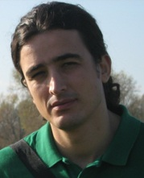

پذيرش > سایت نوشته ها > برای نسرین ستوده، شیر زن اوین، به پاس مقاومتش/آبتین زینالی


 برای نسرین ستوده، شیر زن اوین، به پاس مقاومتش/آبتین زینالی برای نسرین ستوده، شیر زن اوین، به پاس مقاومتش/آبتین زینالی
22 آبان 1389 - - نسخه قابل چاپ
دل نوشت هایی از اوین
در تاریکه اوین آموختم، انسان خم ناشدنی است، که زندگی فقط در آنسوی میله ها نیست. زمانیکه لخت و عورت می کنند، می توانی با اندیشه هایت خود را بپوشانی. که انسان در بند زندان نیست بلکه موجودیت زندان در بند اسارت انسان است. که زندانبان هویتی ندارد و زندانی تمام معنای موجود است. کوه از تو می آموزد که نمی توان انسان را در بند کشید ، حتی اگر او را با پایِ به زنجیر کشیده شده، در کوهی زندانی کنند. که کوه هر روز به حال خود می گرید و اشکهایش از او جاری است.
آموختم بازجویی که بازمی جویدت، انسانیت خویش را گم کرده است. که بازجو در نقشش آزاد است و زندانی در زندگی اش و بازجو در زندگی اش اسیر و زندانی در نقشش.
من روی بازجوهایم را از پشت چشم بند میدیدم که چه زرد گشته اند و آنگاه که با تمام توانشان به گمانشان مرا می کاویدند، صدای خش خش آنها را زیر پاهایم می شنیدم.
که الفبای زندگی می تواند معنایی دیگر گیرد؛ که انسان هم می تواند آرزو کند که ای کاش سر پناهی نداشتم. سقفی بالای سرم نبود. که آبی آسمانی همیشه هم زیبا نیست زمانیکه رنگ دیوارهای پیرامونت باشد. که حتی لمس این دیوار سرد، یاد آور نوازش معشوقه ات می شود. که هر صدایی سکوتی می¬انگیزد و هر سکوتی خلوتی می شکند و تو گوش بر کنسرت ضربان قلبت مینهی.
و آزادی سراب نیست و زندان و زندانی، وهم زندانبان است.
اوین تمامیتش نسبی است چون انسان موجودی نسبی است. که اوین هر روز پست تر می شود، قدش آب می رود. که اینجا جاذبه معنایی ندارد چون همیشه تو بین زمین و آسمان معلق می مانی. که دکتر فقط برای جنایت می آید و برای کمک به جانی، نه قربانی! که اینجا هر چه هشیارتر باشی، داروی بیشتری تجویز می کنند. که تخت برای آسودن نیست و برای شلاق و شکنجه است. که نبرد نور و تاریکی همیشه هم خوب نیست که به سود نور پایان پذیرد، آنگه که نور در چشمانت خیره می¬شود.
که بوی نم در هوا نه نشانه باران که معنای آب های اسیر در دیوار دارد. که چک چک قطره-ای می تواند حتی تشنگی گوشهایت را برطرف کند. که چگونه یک انسان از ضعف خلقتش به خدایش شکایت می کند، که خدایی حتی دروغین چگونه اوج می گیرد و بزرگ می شود.
عشق چه عاشق ها که نمی آفریند و عاشق، خویشتن را تنها به اسارت معشوقش می سپارد و معشوق تمام دنیایش را در برمی گیرد.
که گریستن چقدر می تواند شادی بخش باشد که فریاد و ناله مسکن می شود، درد کشیدن تمرکز می آفریند و تو از ادراک درد، مستانه تلوتلو می خوری. اما ... که تنفس هم می تواند، تنها با دم و بازدمی، تمام وجودت را به آتش کشد و انسان از خود نیز خسته می شود، آری شاید فقط از خودش.
که نگاه می تواند چقدر سنگینی کند، که صدای گامها می تواند انسانی را معنی کند: گامهای خشمگین ، گامهای گرسنه ، گامهای سیر ، گامهای تو خالی و... که انسان در هیچ محدوده ای نمی گنجد و هر روز بزرگتر می شود، ناچارا اوین نیز هر روز باید رشد کند.
که زندان لزوما جایی برای اصلاح افراد ناباب نیست و زندانی فقط فردی نیست که حاکمیت طردش کرده باشد، که حتما اجتماع درکش نکرده است و در توده خویش نیز بیگانه ایست که بیگانگی بزرگترین معصیت آگاهان است. که زندان، اختراع ناقص یک جامعه ناقص است.
که زندانی آگاه، نه در حال بلکه در سالهای آتی در ملتش خواهد زیست. که فضای اوین انباشته از افکار آزادی خواهان است و اوین از این افکار منبسط گشته است. زندان و زندانبان و جامعه و خدای زندانی شرمسارانه عرق ریزانند و البته زندانی، که سربلند برای بنای اجتماعی بدون زندان عرق می¬ریزد ... .
که آواز کلاغی در اوین ، هشدار خطر نیست و نوید روز دیگری و امیدی دوباره است، پرنده ای که به انسانی در قفس مشتاقانه می نگرد و به انسانهای بیرون قفس، مایوسانه... .
اوین در بند است و کوه در زنجیر، زندانبان در خواب است و زندانی بیدار و ... .
آموختم که زندان تلاقی نگاه زندانی با درب مضطربی است که به او پشت کرده، که مصداق تلخ تمام جامعه اوست. دربی که زندانی می کوشد به روشنایی بازش کند. آموختم زندانی مادامی زندانیست که شوق آزادی در سر دارد و دربی بر دیوارها معنای امکان آزادی است.
آموختم که حتی در خواب نیز با ضربه ای بی رحم بر پیکره اندیشه ات، از خواب می گریزی و به دامان بیداری پناه میبری، در حالیکه می دانی بیداری همیشه بهای سنگین تری دارد و آموختم که چگونه به کابوس شبیخون بزنم بی آنکه فردی از خواب برخیزد.
که نمی توانند آرمانت را بر کوره داغ بنهند و بر سندان بکوبندش، نمی توانند ایمانت را سرد کنند در انجماد وحشت و تاریکی. که انسان شکل دادنی نیست، که زندان توان آنرا ندارد که هویت انسانی را در خود اسیر کند. که انسان شکستنی نیست و نمیتوانی رنگش کنی ... بر درب سلولش می توانی قفلی بزنی اما بر اندیشه هایش نمی توان دربی سازی و قفلش کنی.
آموختم که زندانبان نام سلولها را نه از روی شماره، که از نام افراد محبوس در آن می خواند، که هر اطاقی برای خود دارای شخصیتی است مادامیکه فرد موجود در آن به او معنی می-بخشد. که سلول در هویت انسانی گم می شود. که حتی زندانبان زمان رد شدنش از روبروی درب زندانی، حس تشویش دارد.
که پیچک زرد اضطراب بر بدنه اراده آدمی پایدار نمی ماند. که نمی توان هیچ انسانی را در هیچ زندانی گنجاند ... .
آموختم که حاکمیت درب را به روی خود میبندد و قفل را به روی خود میزند نه به روی زندانی. حاکمیتی که بیش از جامعه اش اسیر است و به تعداد افراد اجتماعش به روی دربش قفل زده است و خود در آن زندانی گشته و ترسش به میزان شجاعت زندانیانش، بزرگ و اسارتش به میزان آزادی خواهی ملتش سترگ.
چه دانشگاهی است این اوین، همه چیز را به تو می آموزد. تو در بندهایش می بینی که استاد و دانشجو با واحدهای درسی مشترک در یک کلاس نشسته اند. اطاق اساتید، هیات علمی دانشگاه، کانون وکلا ، کانون نویسندگان، تحریریه مطبوعات، اطاق احزاب ، حتی مجلس ملی و ... همه را در بر دارد.
آموختم که تمام حاکمیت حتی می تواند اسیر تفکر و اندیشه فقط یک فرد بشود و چه کوچک است این حاکمیت و چه حقیرند حاکمانش، آنقدر که در یک سلول می گنجند. هیهات!
آموختم که انسان کتابی ناخوانده است و باید خویش را بخواند ... سروشی میگفت برخیز و بخوان به نامِ انسانیت. که انسان سرود است، ترانه است، شعر است ، حماسه است، تراژدی است، فلسفه است، ایدئولوژی است و ... .
من هندسه را از ابعاد تاریک سلولم، آناتومی جسمم را زیر ضربات باطوم و شلاق، لمس و بند بند پیکرم را زیر سوزش شوک الکتریکی، روانشناسی را در خنده های زشتشان در اعدامهای نمایشی، در استهزا و تهدیشان در تهاجم و تجاوزشان آموختم. من معماری را از پایداری دژ انسانیت در برابر هجوم بربرها یاد گرفتم و نقاشی را از اشکالی که خون سرخم بر صفحه سیاه موزاییکها قلم می زد آموختم و هر روز موسیقی را از تماس سر انگشتان خشک کلید بر صفحه سرد قفل و ناله بی¬روح درب ... چه ها که نیاموختم!
و آنها چه آموخته اند: تاریخ را با ادوات شکنجه. جغرافیا را به محدوده زندان . انسان شناسی را از قصابی بر پیکره انسانیت و ... .
من تمام زندگی را نه از زندان بلکه در زندان و از زندانی آموختم و چه شگفت که معنای آزادی را در آنجا یافتم ... که باید زندگی را از زوایای مختلف بنگری و گاهی شاید از زاویه باز پنجره یک زندان به افق زندگیت نظری بیندازی به وسعت خودت، ملتت و به آرمان¬هایت و ... .
و آموختم که مردمم نیز گاهی باید از آنسوی آن پنجره به دیدنم بیایند تا از نگاه همدیگر چیزها بیاموزیم.
آه ،... باید بیاموزیم که ... .
برادر کوچکِ مجید توکلی، مصطفی تاجزاده و محمد نوری زاد
کمپین خانواده بزرگ زندانیان سیاسی
ارسال به
بالاترین
،
توییتر
،
فریندفید
،
فیسبوک
در همين بخش :
 یک خبر تلخ؟ یک قانونشکنی؟ یک تصمیم بخشنامهای جدید؟ یک خبر تلخ؟ یک قانونشکنی؟ یک تصمیم بخشنامهای جدید؟
چرا بایست به سکسوالیته پرداخت؟ / نفیسه آزاد
آزارجنسی خانگی؛ «قربانی» نه، «نجات یافته»
زنان، بزرگترین بازندگان بهار عرب
سانسور از دیدگاه جنسیتی/الهه امانی
ديگر بخش ها :
طرح یک میلیون امضا
|
مقالات
|
سایت نوشته ها
|
اخبار
|
گزارش كمپين
|
گفت و گو
|
علیه سکوت
|
كوچه به كوچه
|
نامه های شما
|
گزارش ویژه
|
گفتگو با اعضا
|
ویژه سالگرد کمپین
|
تصویر برابری
|
دل آرام علی
|
تریبون
|
مقالات
|
تاریخ شفاهی
|
خارج از چارچوب
|
کتابخانه
|
درباره کمپین
|
کمپین در شهرها
|
کمپین در بند
|
صدای تغییر
|
ویژه 22 خرداد
|
لایحه حمایت از خانواده
|
گالری
|
عشا مومنی
|
امیر یعقوبعلی
|
خدیجه مقدم
|
راحله عسگری زاده و نسیم خسروی
|
پروین اردلان،جلوه جواهری، مریم حسین خواه، ناهید کشاورز
|
زینب پیغمبرزاده
|
سعیده امین، سارا ایمانیان، محبوبه حسین زاده، ناهید کشاورز و همایون نامی
|
احترام شادفر
|
نسیم سرابندی زاده،فاطمه دهدشتی
|
وبلاگ مهمان
|
پرونده خرم آباد
|
دستگیری ها
|
مریم مالک
|
پرستو اللهیاری
|
مهرنوش اعتمادی
|
سمیه رشیدی
|
Other Languages
|
همراهان
|
«فراخوان کمپین ده روز با بهاره هدایت»
| English
|